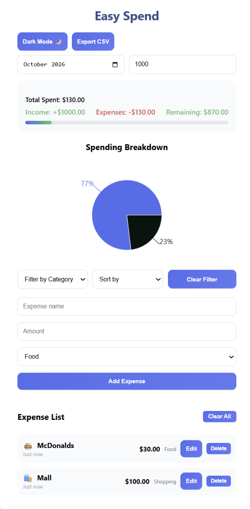

York College of Pennsylvania
Bachelor’s studies in Computer Science
Minor in Data Science
Expected 2028
Computer Science · Class of 2028
Computer Science student at York College of Pennsylvania, minoring in Data Science.
01 · About
I’m a Computer Science student at York College of Pennsylvania with a minor in Data Science. This portfolio will document my engineering work from the problem and technical decisions through the final implementation.
02 · Education
Bachelor’s studies in Computer Science
Minor in Data Science
03 · Projects
Easy Spend is a responsive expense tracker that lets users add and categorize expenses, monitor total spending and remaining balance, and filter their records. Its interactive pie chart turns spending by category into clear percentage-based insights.

04 · Contact
Visit my GitHub profile to explore my repositories and review my latest commits and contributions.
View GitHub profile